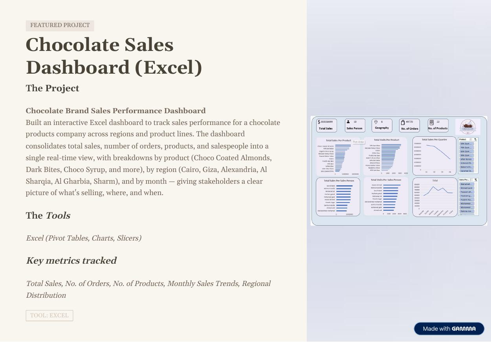
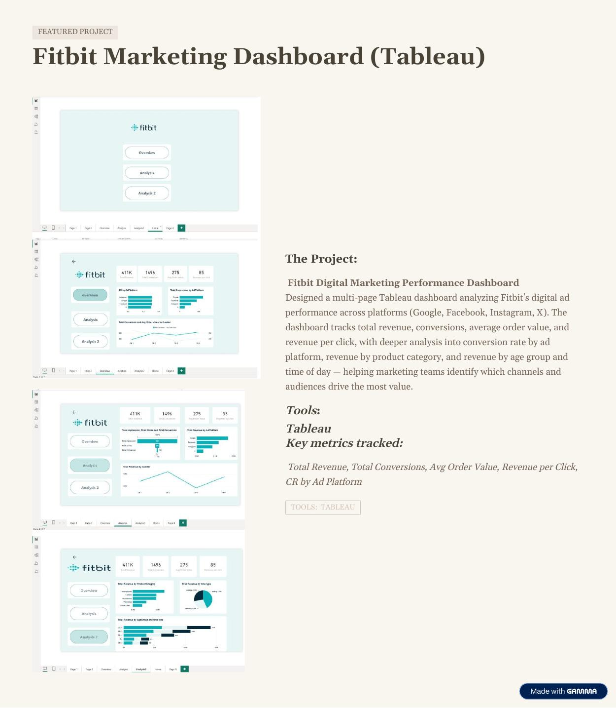
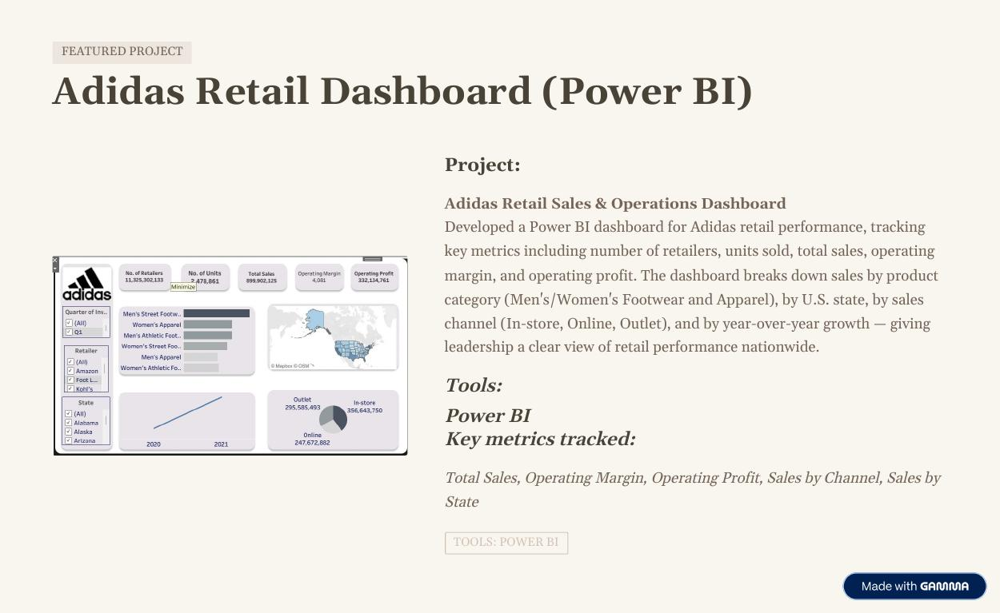

Excel & SQL
Data preparation, queries, analysis, and structured reporting.
I'm Habeba, a Data Analyst who turns messy data into clear dashboards, useful reports, and insights people can act on.
With a background in Information Systems and professional data analysis training, I work across the analytics process—from preparing data and exploring patterns to designing dashboards that make key information easy to understand.
I believe great analysis is more than charts. It's about asking the right questions, explaining what the numbers mean, and helping people make more confident decisions.
From extracting and preparing data to communicating insights with clarity.
Data preparation, queries, analysis, and structured reporting.
Automated workflows, exploratory analysis, and statistical exploration.
Interactive dashboards and visual storytelling for decision-makers.
Practical services to help turn business data into information you can use.
Standardize, validate, and organize data so it's ready for reliable analysis.
Power BI, Tableau, and Excel dashboards focused on the KPIs that matter.
Communicate findings and meaningful patterns through clear reports.
Reduce repetitive work with efficient Python and Excel workflows.
Explore focused business questions and provide evidence-based answers.
A selection of dashboard projects that make performance easier to explore.

PROJECT 01An interactive sales overview across products, regions, months, orders, and salespeople—helping stakeholders see what's selling, where, and when.

PROJECT 02A multi-page analysis of digital advertising across Google, Facebook, Instagram, and X, with performance breakdowns by platform, product, audience, and time.

PROJECT 03A retail performance view of sales, operating profit, margin, product categories, U.S. states, sales channels, and year-over-year performance.
Project previews are taken from the portfolio PDF. Replace them with standalone dashboard screenshots for the clearest presentation.
My focus is to make data understandable, useful, and aligned with the decisions you need to make.
I measure success by the value the analysis brings—not its complexity.
Insights explained in straightforward language, without unnecessary jargon.
Project-based or ad-hoc support shaped around your needs.
Attention to detail from data preparation through final delivery.
Have a data challenge or a project in mind? Tell me what you're working on.
Email me about your project ↗